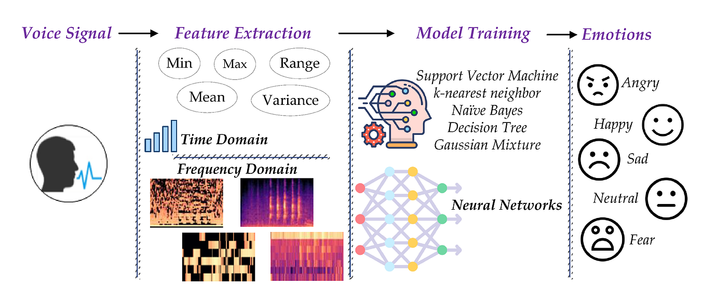
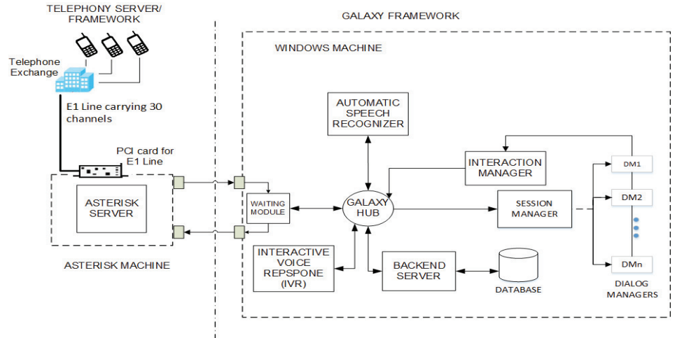

Research Experience
-
Speech Emotion Recognition
 Speech signal contains the emotional state of a speaker along with the message. The recognition of the emotional state of a speaker helps in determining the true meaning of a message and allows for more natural communication between humans and machines. The design and development of a speech recognition system involves design and recording of a corpus, analyzing different feature sets to discover most appropriate feature set, and determining best classification approaches. We designed and developed a corpus for speech emotion recognition for the Urdu language. The performance of frame-level features, utterance-level features, and spectrograms have been evaluated. Emotion recognition experiments have been conducted using classifiers including Support Vector Machine, Hidden Markov Models and Convolutional Neural Networks. Experimental results show that the utterance-level features outperform the frame-level features and spectrograms. The combined feature set of cepstral, spectral, prosodic, and voice quality features performs better than the individual feature sets. The unweighted average recalls of 84.1%, 80.2%, 84.7% have been achieved for speaker-dependent and speaker-independent and text-independent emotion recognition, respectively.
Relevant Paper(s):
DESCU: Dyadic emotional speech corpus and recognition system for Urdu language -
Spoken Dialog System
 Speech-based services over simple mobile phones are a viable way of providing information-access to under-served populations (low-literate, low-income, tech-shy, handicapped, linguistic minority, marginalized). Despite the simplicity and flexibility of speech input, telephone-based information services commonly rely on push-button (DTMF) input. This is primarily because high accuracy automatic speech recognition (ASR), that is essential for an end-to-end spoken interaction, is not available for several languages in developing regions. We share findings from an HCI design intervention for a dialog system-based weather information service for farmers in Pakistan. We demonstrate that a high accuracy ASR alone is not sufficient for effective, inclusive speech interfaces. We present the details of the iterative improvement of the existing service that had low task success rate (37.8%) despite being based on a very high accuracy ASR (trained on target language speech data). Based on a deployment spanning 23,997 phone calls from 6893 users over 10 months, we show that as multimodal input, user adaptation and context-specific help were added to supplement the ASR, the task success rate increased to 96.3%. Following this intervention, the service was made the national weather hotline of Pakistan. Relevant Paper(s): Personalized weather information for low-literate farmers using multimodal dialog systems Spoken dialog system framework supporting multiple concurrent sessions Development of Multiple Automatic Speech Recognition Systems in the Galaxy Framework
-
Speech Recognition
 Speech interfaces provide people an easy and comfortable means to interact with computer systems. Speech recognition is
a core component of speech interfaces which recognizes human speech in a particular language. We have recorded datasets
for the Urdu language related to different domains like weather information, travel reservation, etc. Automatic Speech
Recognition (ASR) systems for cities of Pakistan, numbers, dates, etc. have been developed. These ASR systems have been
used in spoken dialog systems to provide weather information and reserve bus seats for traveling.
Relevant Paper(s):
Urdu speech recognition system for district names of Pakistan: Development, challenges and solutions
Urdu speech corpus for travel domain
Speech interfaces provide people an easy and comfortable means to interact with computer systems. Speech recognition is
a core component of speech interfaces which recognizes human speech in a particular language. We have recorded datasets
for the Urdu language related to different domains like weather information, travel reservation, etc. Automatic Speech
Recognition (ASR) systems for cities of Pakistan, numbers, dates, etc. have been developed. These ASR systems have been
used in spoken dialog systems to provide weather information and reserve bus seats for traveling.
Relevant Paper(s):
Urdu speech recognition system for district names of Pakistan: Development, challenges and solutions
Urdu speech corpus for travel domain
Achievements & Awards
-
Research Excellence Award 2015
Center for Language Engineering, University of Engineering & Technology, Lahore
-
Research Excellence Award 2014
Center for Language Engineering, University of Engineering & Technology, Lahore